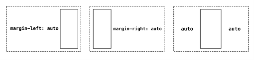
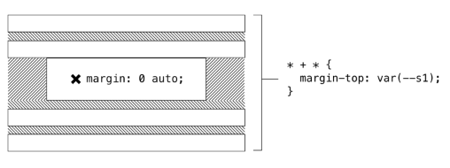
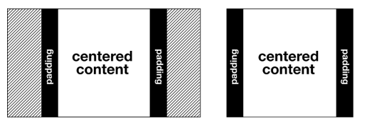
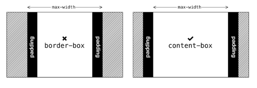
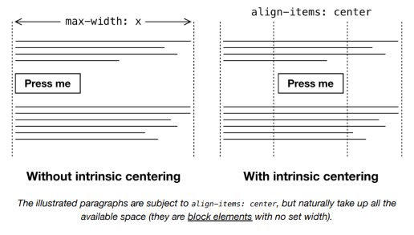

The Center¶
El problema¶
En los primeros días de HTML, existían varios elementos de presentación; elementos diseñados puramente para afectar la apariencia de su contenido. El <center> ↗ era uno de esos elementos, pero hace tiempo que se considera obsoleto. Curiosamente, todavía es compatible en algunos navegadores, incluido Google Chrome. Presumiblemente esto se debe a que la página de búsqueda de Google todavía usa un <center> para centrar su famoso input de búsqueda.
Dejando de lado el uso caprichoso de elementos obsoletos por parte de los gigantes tecnológicos, en su mayoría nos alejamos del uso de marcado de presentación en los años 2000. Al hacer que el estilo sea responsabilidad de una tecnología separada —CSS— pudimos gestionar el estilo y la estructura por separado. En consecuencia, un cambio en la dirección de arte ya no significaría reconstituir nuestro contenido.
Más tarde descubrimos que estilizar HTML puramente en términos de semántica y contexto era bastante ambicioso, y llevó a selectores poco manejables como:
Por el bien de un mantenimiento de CSS más fácil y la modularidad del estilo, muchos de nosotros adoptamos una posición de compromiso usando clases. Debido a que las clases se pueden colocar en cualquier elemento, somos libres de estilizar, por ejemplo, un <div> no semántico o un <nav> reconocido por lectores de pantalla exactamente de la misma manera, usando el mismo token, pero sin comprometer la accesibilidad.
Convenciones de nomenclatura¶
Notarás mi convención de nomenclatura on the nose (directa) en el ejemplo anterior. Mi elección de nomenclatura para las clases de utilidad se cubre en la sección Measure. En resumen, la estructura property-name:value está diseñada para ayudar con el recuerdo.
Todo lo que <center> hacía, y todo lo que text-align: center hace, es centrar texto. Y para la mayoría del contenido —especialmente contenido que incluye texto de párrafo— querrás evitarlo. Es terrible para la legibilidad ↗.
Pero lo que sería útil es un componente que pueda crear una columna centrada horizontalmente. Con tal componente, podríamos crear una 'franja' centrada de contenido dentro de cualquier contenedor, limitando su ancho para preservar una medida razonable.
La solución¶
Una de las formas más fáciles de resolver una columna centrada es usar márgenes auto. La palabra clave auto, como su nombre lo sugiere, le indica al navegador que calcule el margen por ti. Es quizás uno de los ejemplos más rudimentarios de una técnica CSS algorithmica: una que difiere a la lógica del navegador para determinar el layout en lugar de 'codificar' un valor específico.

Mis primeras columnas centradas usaban el shorthand margin, a menudo en el elemento <body>.
El problema con el shorthand margin — aunque ahorra unos bytes — es que tienes que declarar ciertos valores, incluso cuando no son aplicables. Es importante establecer solo los valores CSS necesarios para lograr el layout específico que intentas. Nunca sabes qué valores inferidos o heredados podrías estar deshaciendo.
Por ejemplo, podría querer colocar mi elemento personalizado <center-l> dentro de un contexto Stack. Stack establece margin-top en sus hijos, y cualquier <center-l> con margin: 0 auto desharía eso.

En su lugar, podría usar las propiedades explícitas margin-left y margin-right. De esta forma, cualquier margen vertical aplicado contextualmente se preservaría, y el componente estaría preparado para la composición/anidación entre otros componentes de layout.
Medida¶
El max-width debería típicamente — como en el ejemplo de código anterior — establecerse en ch, ya que lograr una medida razonable es primordial. La sección Axioms detalla cómo establecer una medida razonable.
Margen mínimo¶
En un contexto más estrecho que 60ch, el contenido actualmente quedará pegado a cualquiera de los lados del elemento padre o viewport. En lugar de permitir que esto suceda, deberíamos asegurar un espacio mínimo a cada lado.
Necesito abordar esto de una manera que preserve el centrado y el ancho máximo. Como no podemos entrar en un cálculo con auto (como calc(auto + 1rem)), probablemente deberíamos delegar en padding.

Pero tengo que tener cuidado con el modelo de caja. Si, como se sugirió en Boxes, he configurado todos los elementos para adoptar box-sizing: border-box, cualquier padding agregado a mi <center-l> contribuirá al total de 60ch. En otras palabras, agregar padding hará que el contenido de mi elemento sea más estrecho. Sin embargo, como se cubre en Axioms, CSS está diseñado para excepciones. Solo necesito sobrescribir con box-sizing: content-box, y permitir que el padding 'crezca hacia afuera' desde el umbral de contenido de 60ch.

Aquí hay una versión que preserva el max-width de 60ch, pero asegura que haya, al menos, "márgenes" a cada lado (var(--s1) es el primer punto en la escala modular basada en propiedades personalizadas).
Centrado intrínseco¶
La solución de margin: auto es consagrada y perfectamente funcional. Pero hay una oportunidad usando el módulo de layout Flexbox para soportar el centrado intrínseco. Esto es, centrar elementos basándose en sus anchos naturales basados en el contenido. Considera el siguiente código.
Dentro de un componente <center-l>, esperaría que los contenidos se organizaran verticalmente, como una columna, de ahí flex-direction: column. Esto me permite establecer align-items: center, que centrará cualquier hijo independientemente de su ancho.
El resultado es que cualquier elemento que sea más estrecho que 60ch se centrará automáticamente dentro del área de 60ch. Estos elementos pueden incluir elementos naturalmente pequeños como botones, o elementos con su propio max-width establecido bajo 60ch.

Los párrafos ilustrados están sujetos a
align-items: center, pero naturalmente ocupan todo el espacio disponible (son elementosblocksin ancho establecido).
⚠ Accesibilidad¶
Ten en cuenta que, cada vez que mueves contenido lejos del borde izquierdo (en una dirección de escritura de izquierda a derecha), hay un posible problema de accesibilidad. Cuando un usuario ha hecho zoom en la interfaz, es posible que el contenido centrado se haya movido fuera del viewport. Puede que nunca se den cuenta de que está ahí.
Mientras tu interfaz sea flexible y responsiva, y no se establezca un ancho fijo en el contenedor, el contenido centrado debería ser visible en la mayoría de las circunstancias.
Casos de uso¶
Siempre que desees centrar algo horizontalmente, el Center es tu amigo. En el siguiente ejemplo, estoy emulando el layout básico para el sitio de documentación de Every Layout (que puedes estar viendo ahora, a menos que estés leyendo el EPUB). Comprende un Sidebar, con un Center al lado derecho. Los elementos están separados verticalmente tanto en la barra lateral como en el Center usando Stack. Un Center anidado con el booleano intrinsic aplicado centra el botón 'Launch demo'.
(Puede que necesites abrirlo en su propia ventana (de escritorio) para ver el centrado en acción.)
This interactive demo is only available on the Every Layout site ↗.
El generador¶
Usa esta herramienta para generar CSS y HTML básicos de Center.
La herramienta generadora de código solo está disponible en el sitio de documentación adjunto ↗. Aquí está la solución básica, con comentarios (omitiendo el código de centrado intrínseco):
CSS
HTML
El componente¶
Una implementación de elemento personalizado del Center está disponible para descargar ↗.
API de Props
Las siguientes props (atributos) harán que el componente se renderice nuevamente cuando se alteren. Pueden ser alterados a mano — en las herramientas de desarrollo del navegador — o como sujetos del estado de la aplicación heredada.
| Nombre | Tipo | Default | Descripción |
|---|---|---|---|
max |
string | "var(--measure)" |
Un valor CSS de max-width |
andText |
boolean | false |
Centrar el texto también (text-align: center) |
gutters |
string | "0" |
El espacio mínimo a cada lado del contenido |
intrinsic |
boolean | false |
Centrar elementos hijos según su ancho de contenido |
Ejemplos¶
Básico¶
Puedes crear una página web de una sola columna simplemente anidando un Stack dentro de un Center dentro de un Box. El Box teniendo padding por defecto significa que proporcionar padding a los lados del Center usando la prop gutters no es necesario.
Layout de documentación¶
El marcado del ejemplo en Casos de uso. En el ejemplo, se han agregado roles de landmarks WAI-ARIA para soporte de lectores de pantalla. Nota que el Center se ha envuelto en un contenedor <div> genérico. Este <div> está sujeto a la lógica del layout Sidebar, liberando al Center para aplicar su propia lógica dentro de él. El Sidebar envuelve cuando el <div> comienza a ocupar menos del 66.666% del espacio horizontal disponible. Lee Sidebar para una explicación completa.
Centrado vertical y horizontal¶
Usando composición y el componente Cover, es trivial centrar un elemento horizontal y verticalmente. El booleano intrinsic se usa aquí para centrar el párrafo independientemente del ancho de su contenido.